01 · 火球飞行 8 帧
中【序列】/base_fly_fire/base_fly_fire

中【序列】/base_fly_fire/base_fly_fire
前【序列】/impact_fire
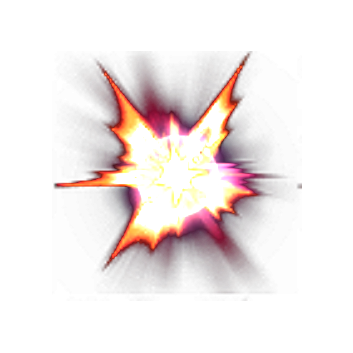
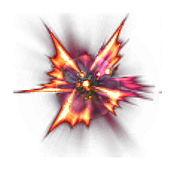
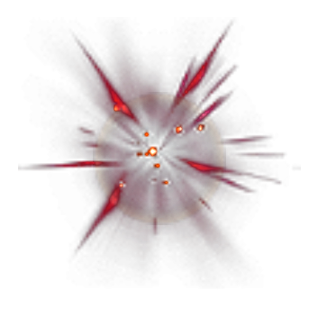
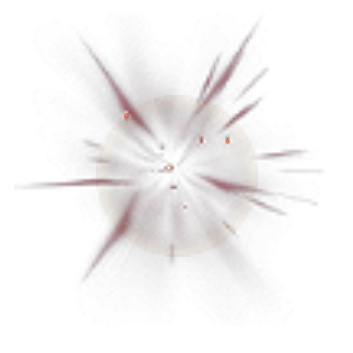
中【序列】/base_fly_thunder/1


前【序列】/impact_electric


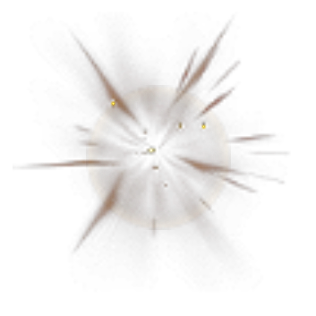
后【序列】/zzuiorthe/shot_elect/1
后【序列】/zzuiorthe/attacked_elect


后【序列】/zzuiorthe/shot_iceberg/1
前【序列】/icelocklv1

后【序列】/zzuiorthe/states_freeze


后【序列】/zzuiorthe/states_dot_heal/1
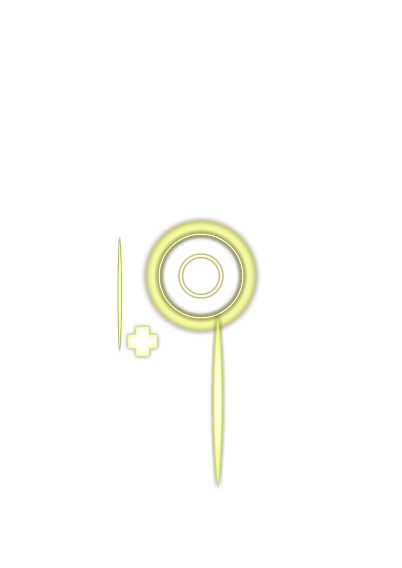
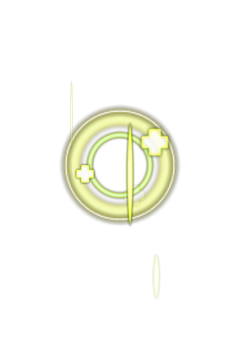
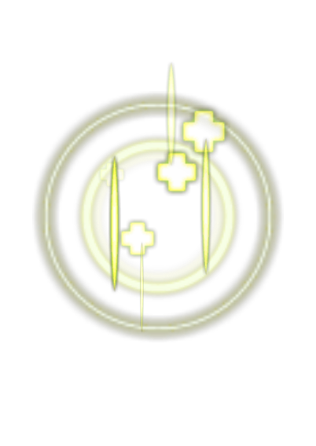
后【序列】/zzuiorthe/states_shield/1
后【序列】/zzuiorthe/states_damage_prevent_a/1
前【序列】/blockdestroyeffect
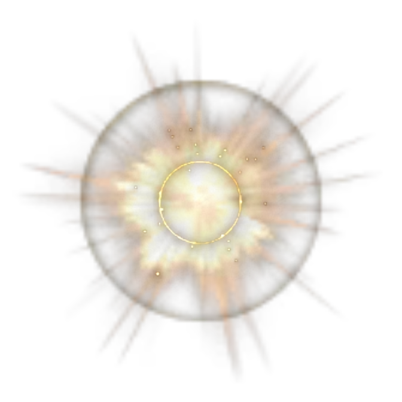
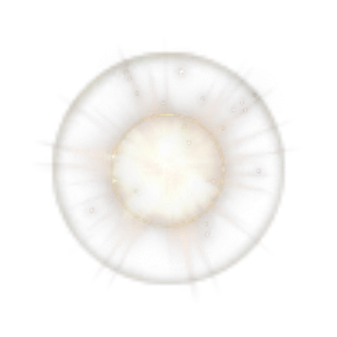
前【序列】/hiteffectnormal1
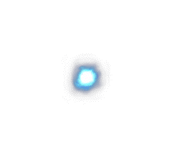
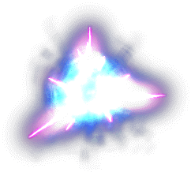
后【序列】/zzuiorthe/states_buffremove/1
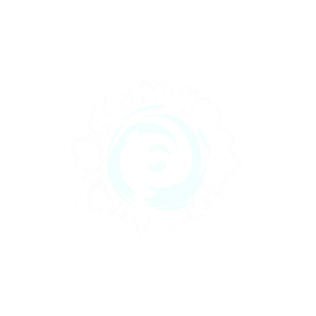